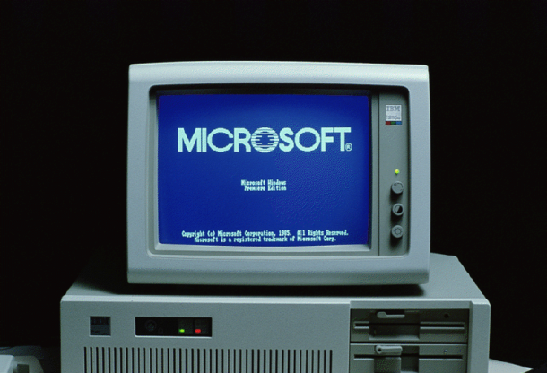
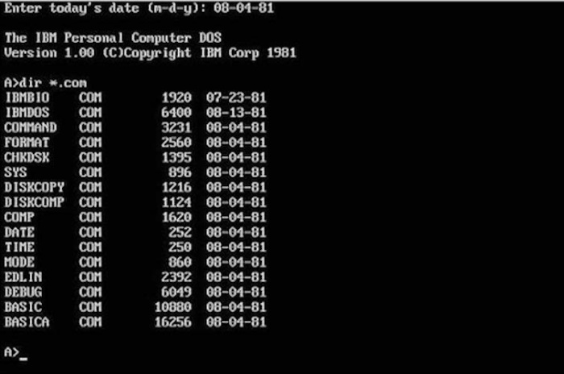

The First Microsoft Computer
What Is It?
The picture you see before your eyes is the first Microsoft computer ever built. It was a 16-bit machine capable of multi-tasking. It also came with an MS-DOS installation (which was required for basically all machines back then). People still have this ancient machine today, they're worth over $20,000. The machine was manufactured by a company called Xerox. This company is still around, but they're making printers instead of machines. This article is about everything you'll need to know about the first Microsoft PC.
The Operating System
The first Microsoft computer ran an operating system called MS-DOS. There is a picture above this paragraph of what it looks like. Try making a website on that, am I right? It was a command base operating system. If you wanted to work a computer job, you had to know the commands of the operating system. If you had a job with computers back in the 70's and 80's, you would make quite a bit of money because the operating system was difficult to use and nobody really wanted to learn it.
How Hard Was It To Set Up?
Windows has come a LONG way with their computer setup. Nowadays, you just have to choose certain settings layed out for you, but back then it was FAR different. You had to have three floppy disks with three different parts of the MS-DOS setup. You may ask yourself, what the heck is a floppy disk? What does it look like? Well, I can answer both of those questions for you.
Floppy Disk:

A floppy disk was an external hard drive/USB for a computer. It was used for booting the computer and installing its operating system.
Since the 70's, Microsoft has become one of the biggest industries in the world. From creating one of the first computers, to making the most powerful console ever made. You owe all of this to Bill Gates and the other entrepreneurs who dared to dream.